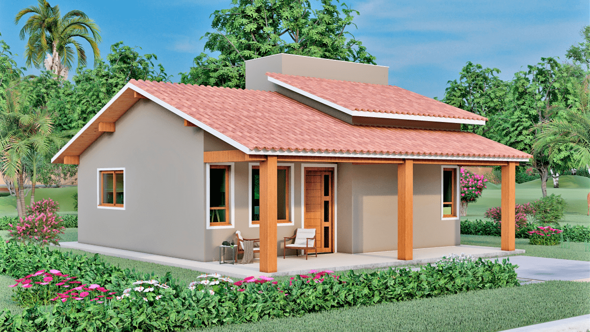

nome da postagem
se você está em busca de experiência autêntica da culinária do Norte no coração de Araraquara, não procure mais!A Casa do Norte conquistou meu coração (e meu paladar) com suas irresistíveis comidas caseiras e autênticas, trazendo o calor e sabor diretamente da região nortista. 🍲 Sabores Autênticos do Norte Ao entrar na Casa do Norte, fui transportado para um ambiente acolhedor e cheio de personalidade, que reflete fielmente as tradições e a hospitalidade da culinária do Norte do Brasil. Os pratos oferecidos são verdadeiramente autênticos, preparados com ingredientes frescos e amor. 🥘 Variedade de Opções para Todos os Paladares O cardápio diversificado oferece uma ampla gama de opções, desde deliciosos pratos de peixe até carnes suculentas e, é claro, uma seleção incrível de acompanhamentos que capturam os verdadeiros sabores do Norte. Não importa se você é fã de vatapá, tacacá, ou simplesmente está procurando uma deliciosa feijoada, a Casa do Norte tem algo para todos. 👨🍳 Equipe Atenciosa e Apaixonada A equipe da Casa do Norte é mais do que uma equipe, são verdadeiros embaixadores da cultura gastronômica nortista. Com atendimento caloroso e atencioso, eles estão sempre dispostos a compartilhar informações sobre os pratos e garantir que sua experiência seja inesquecível. 🌈 Ambiente Aconchegante Além da comida incrível, o ambiente da Casa do Norte é aconchegante e convida a relaxar. A decoração temática, a música envolvente e o espírito acolhedor tornam este lugar não apenas um restaurante, mas uma verdadeira experiência cultural. 🌟 Conclusão: Uma Jornada Gastronômica Inesquecível Se você ainda não experimentou as delícias da Casa do Norte em Araraquara, recomendo fortemente que faça uma visita. Prepare-se para uma jornada gastronômica inesquecível, onde cada prato conta uma história de tradição e paixão pela culinária regional. Casa do Norte, obrigado por trazer os autênticos sabores do Norte até nós! Mal posso esperar pela minha próxima visita. 👏🍽️ #CasaDoNorte #CulinariaNortista #AraraquaraGastronomica